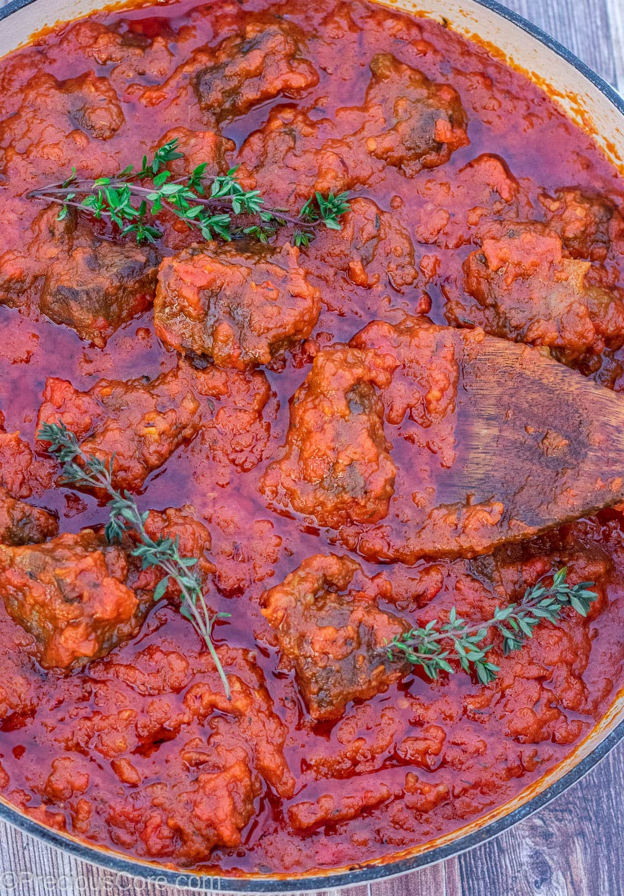
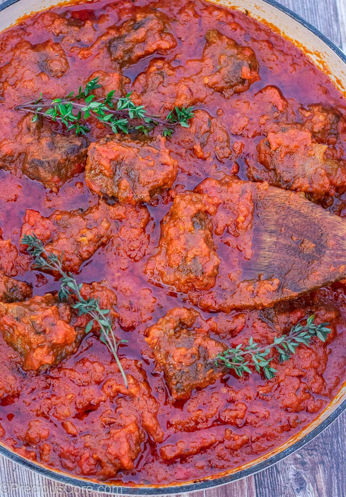
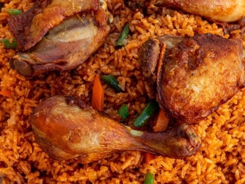
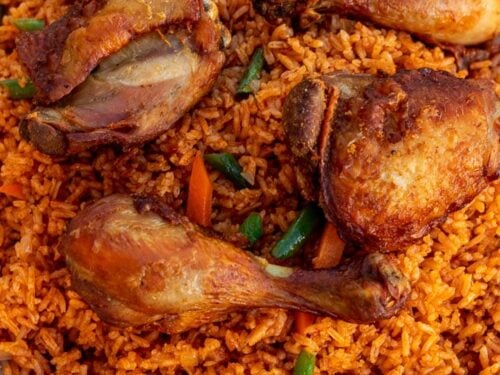

Nigeria Major Ethnic Groups
Brief History
Nigeria as a nation has a rich and complex history which can be traced to when it first became a British protectorate in 1901. As a colony, it was initially divided into the Southern Nigeria Protectorate and Northern Nigeria Protectorate. The southwest has always been dominated by the Yoruba people, descendants of the Oyo Empire, while the southeast has always been dominated by the Igbo people from the Nri Kingdom. Most of the north is inhabited by the Hausa and Fulani people who are descendants of the Hausa Kingdom, Fulani Empire, and Songhai Empire. These tribes, Yoruba, Hausa, and Igbo, are the three major tribes in Nigeria. However, there exists a large number of other tribes with over 520 languages, some of which had initially branched out from these main three. This is an ultimate guide to some of the indigenous people of Nigeria.
Hausa
The Hausa people are the largest tribe in Nigeria, making up approximately 25% of the population. Hausaland is concentrated in northern Nigeria, situated between the River Niger and Lake Chad.
The Hausa practice a very homogenized culture, keeping their traditions and way of life during and after colonization. Islam is the main religion of Hausas and is said to have been brought by traders from Mali and Guinea during their trade exchanges, which they quickly adapted. Aside from English, they primarily speak the Hausa language.


Yoruba
The Yoruba people make up the second largest tribe, constituting an estimated 21% of the population. The Yoruba states are located in southwest and north-central regions of Nigeria. However, Yoruba speakers can also be found in parts of nearby countries, such as Benin Republic and Togo.
The Yoruba people practice Christianity and Islam, while a minority still follow ancestral traditional beliefs. They are people of many cultural traditions, and Ile Ife which in Yoruba mythology is where life began is held as the spiritual center of the Yoruba tribe.


Igbo
The Igbo people are descendants of the Nri Kingdom, the oldest in Nigeria. They have many customs and traditions and can be found in southeast Nigeria, consisting of about 18% of the population. This tribe differs from the others in that there is no hierarchical system of governance. Instead, a traditional republican system exists with a consultative assembly of people, which guarantees equality to citizens.
The Igbo people also had their traditional beliefs, but after colonization, the majority (more than 90%) converted to practice Christianity, with a large number becoming Catholic.
The Igbo people also play an important part in the Nigerian oil trade since most of this natural resource is found within Igbo land.


Nigeria Foods
Tomato Stew
If you are new to Nigerian cuisine, this should be your introduction. This Nigerian Tomato stew is primarily made up of tomatoes, peppers, onions (tomato stew base) and spices. It is delectable and easy to make.
You can’t have a menu block or menu fatigue once you have stew, as it is called and most people always, always have a bowl of stew tucked away in their freezers. It is eaten with most staples, white rice, bread, yam, pasta, beans, sweet potatoes, Irish potatoes, agidi/eko etc.
 


Jollof Rice
Jollof rice is the culinary symbol of Nigeria. Nigerians are passionate about this dish. Jollof rice features regularly on dinner tables, restaurants, and in every Nigerian social gathering. It is also sold by street vendors. Nigerian jollof rice is rice cooked in a rich tomato sauce. Jollof means ‘one pot’ in Wolof language of Senegal. So, if you must learn only one Nigerian dish, it has to be the Nigerian Jollof Rice.
It is served on its own or with many side dishes like moi-moi, fried plantain, banana slices, avocado, vegetable salad etc. Nigerian jollof rice is truly incomparable.
 


Okro
Okro soup, Okra soup (Lady’s finger or gumbo) is one of Nigeria’s “national” dishes, this soup is cooked across the length and breadth of Nigeria, from the north where dehydrated okro is used to the south where okro is used fresh.
The methods of preparation vary, sometimes even within the same community, some fry their okro, others just add it raw to their soup broth. It can also be cooked separately and served with omi obe stew or Nigerian tomato stew this type of Okro soup is called Ila (Plain Okro soup). It is a quick-cooking vegetable soup and finger-licking good.


Egusi Soup
It can arguably be said that Egusi Soup is the most universal of all Nigerian soups. Practically every Nigerian tribe has their own version of egusi soup. Egusi is melon seed that is shelled and ground into a powder before adding it to the soup. It is nutty and mildly sweet, with the rich oil from the egusi seeds making it taste delectable.
Egusi soup is so versatile, it can be paired with a number of other soups e.g Egusi and ogbono soup, or different starches, like fufu or white rice.
You can make the Fried Egusi Soup or lumpy Egusi soup.
Beans Porridge
In Nigeria, there are many ways beans is prepared but beans porridge is very popular and universal. Mothers believe beans porridge is highly nutritious and will make a child grow taller, so they make sure it features regularly on the dinner table.
Beans porridge is a one-pot dish that is very easy to cook and tastes delightful. It can be eaten on its own or served alongside rice and stew, fried or boiled plantains or yam, water-soaked garri, bread etc. Other ingredients like corn can be added to make Adalu, also plantains, yam, sweet potato, chopped liver, dry fish etc. are sometimes added to it.
Nigeria Greetings
- Bawo ni: This is the standard way of greeting in Yoruba. It means ‘How are you’ and can be used informally and formally at any time of the day. Though, it is not advisable to say ‘Bawo ni’ to elderly people.
- Kedu: This is how to say hello in Igbo. It literally translates as “how are you”. It is a common greeting among the Igbos and can be used any time of day in any kind of situation.
- Saanu: This is a formal way to say hello in Hausa. It is commonly used in northern Nigeria.
- Kóyo: It is a way of saying “hello” or “how are you” in Benin. This greeting is commonly used in Benin and neighboring communities. It can be used at any time of the day and in any situation.
- Mesiere: This is commonly used by Efik/Ibibio people to say hello. It is an everyday, complimentary greeting used between all people. However, some are of the opinion that “Idem mfo?” or “Abadie” are better interpretations.
- Ado: This is how to say hello in Ijaw language which is spoken in Bayelsa state. However, this greeting has several variations. You could say ‘Tobaroa’, ‘Nua’, ‘botei’, or ‘Ibasa’.
- Ibaatẹ: This is how the Kalabari say hello. It is a general form of greeting. It belongs to the Ijaw ethnic group in Niger River Delta.
- Mavo: Literally translated as “how are you?”, Mavo is how you say hello in Urhobo spoken in Delta state. It can be used in both formal and informal situations.
- Abole: This could be translated as “How are you?” or “Hello”. It is used by Idoma people in Benue state to say ‘hello’.
- Ushé-ushé: This is a form of general greeting in Kanuri language which is spoken in former Kanem and Bornu empire. In an informal setting you can say “Awi yei?” which means “how are you?”